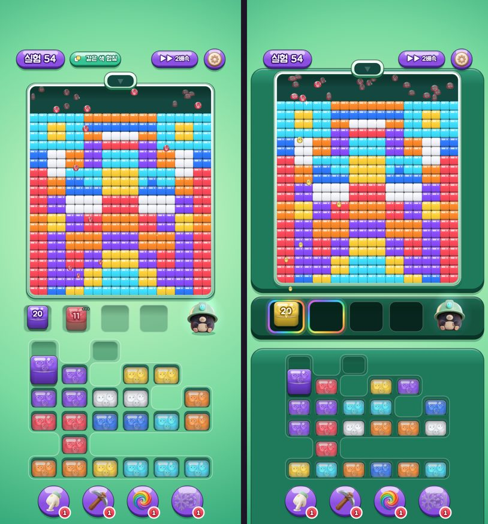
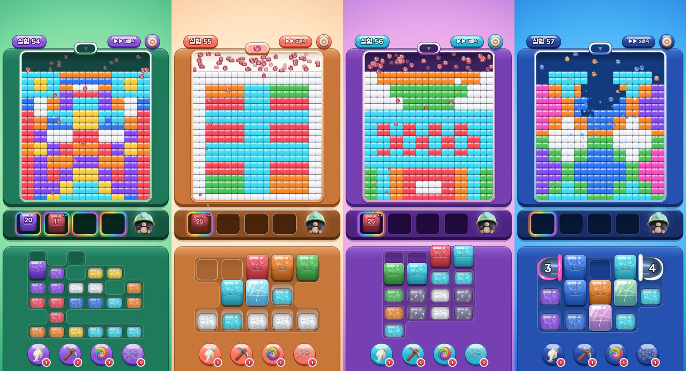
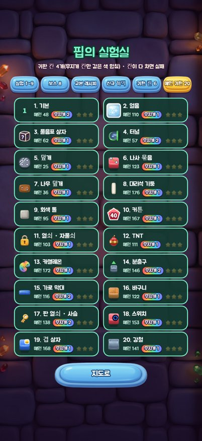
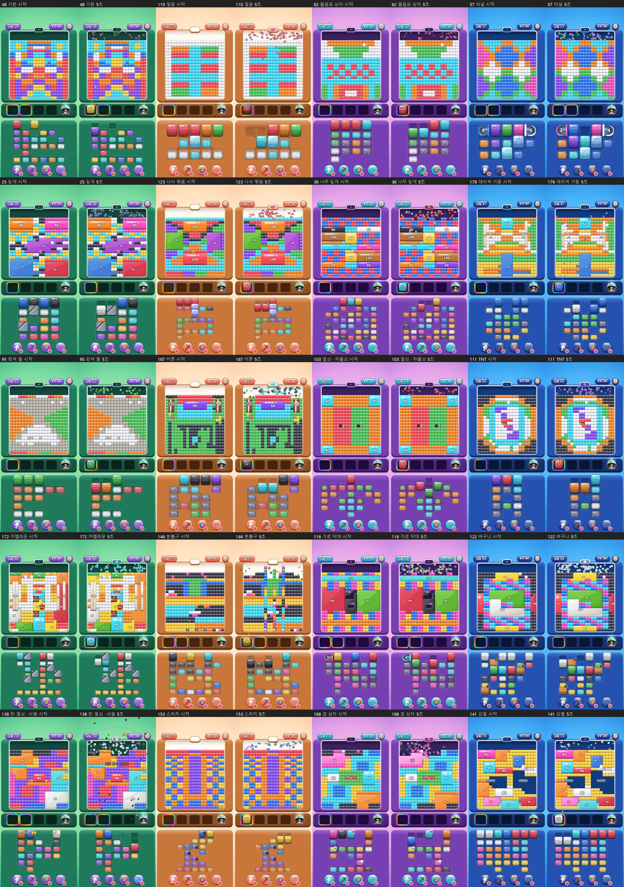

무지개 귀환 칸 · 화면 다시 짜기 (v18.7)
실험실 → 「메인 귀환 20」. 메인 200판은 그대로예요.
규칙
- 귀환 칸 4개. 기본은 합침 없음: 상자마다 칸을 하나씩 써요.
- 왼쪽 1~2칸은 무지개 칸(돌아가는 무지개 테두리). 빈 칸은 왼쪽부터 채워지니, 비어 있는 무지개 칸에 먼저 앉은 색이 그 칸을 차지하고 같은 색은 계속 거기로 합쳐져요.
- 무지개 칸을 다시 쏘아 비우면 다음에 돌아오는 색이 그 칸을 가져가요. 어떤 색을 먼저 돌려보낼지가 새 전략이에요.
- 판마다 무지개 칸 수는 실험실 카드에 「무지개 1 · 2」로 보여요.
화면
- 챔버를 24px 올렸어요(핍이 위에 없으니까요). 귀환 칸과 하단 판 사이에 18px 틈을 두었어요.
- 챔버 · 귀환 칸 · 하단 판을 화면 폭을 꽉 채우는 입체 받침(윗면 · 앞면 두께 · 그림자) 위에 올렸어요. 받침은 바탕보다 확실히 짙은 색이라 세 구역이 또렷이 갈라져요.
- 귀환 칸은 짙게 파인 칸으로 바꾸고 크게 했어요(상자 44 → 50). 하단 판 받침은 화면 아래 끝까지 이어지고, 아이템은 그 위에 놓여요.
전 · 후 (민트)

테마 4가지

20판 검증(튜닝에 안 쓴 시드)
| # | 기믹 | 메인 | 무지개 | 수명 | 풀림 | 실수 봇 승률 |
|---|---|---|---|---|---|---|
| 1 | 기본 | 48 | 2 | 2초 | 100% | 67% |
| 2 | 얼음 | 110 | 1 | 2초 | 100% | 71% |
| 3 | 물음표 상자 | 62 | 1 | 1.5초 | 92% | 67% |
| 4 | 터널 | 57 | 2 | 3초 | 67% | 42% |
| 5 | 덮개 | 25 | 1 | 4초 | 100% | 42% |
| 6 | 나사 묶음 | 123 | 1 | 1.5초 | 100% | 75% |
| 7 | 나무 덮개 | 36 | 1 | 1.5초 | 75% | 25% |
| 8 | 대리석 기둥 | 176 | 1 | 1.5초 | 100% | 17% |
| 9 | 회색 돌 | 95 | 1 | 1.5초 | 100% | 54% |
| 10 | 커튼 | 167 | 1 | 1.5초 | 100% | 38% |
| 11 | 열쇠 · 자물쇠 | 103 | 1 | 1.5초 | 92% | 50% |
| 12 | TNT | 111 | 1 | 1.5초 | 100% | 29% |
| 13 | 카멜레온 | 172 | 1 | 1.5초 | 100% | 33% |
| 14 | 분출구 | 146 | 2 | 2초 | 83% | 29% |
| 15 | 가로 막대 | 116 | 2 | 3초 | 100% | 33% |
| 16 | 바구니 | 122 | 1 | 2초 | 100% | 33% |
| 17 | 판 열쇠 · 사슬 | 138 | 2 | 1.5초 | 100% | 25% |
| 18 | 스위치 | 153 | 1 | 1.5초 | 100% | 58% |
| 19 | 겹 상자 | 168 | 1 | 1.5초 | 100% | 58% |
| 20 | 강철 | 141 | 1 | 2초 | 100% | 29% |
풀림 = 같은 시드에서 실수 없는 봇이나 실수 봇 둘 중 하나라도 깬 비율(12판). 실수 봇 = 30% 판단 실수(24판). 평균 승률 44%.
실험실 탭

20판 시작 · 5초 뒤
